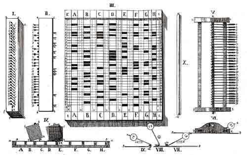

Знаки, у которых есть толщина
Читается подряд. Нажми на удар — откроется подробный разбор с источниками.
Семён Корсаков родился в 1787 году в Херсоне, в семье главного строителя города, воевал в 1812 году и прошёл заграничный поход.Узнать подробнееСвернуть
Отец, инженер-полковник Николай Корсаков, с 1784 года руководил строительством Херсона и умер в 1788-м под Очаковым. После войны сын служил в статистическом управлении Министерства внутренних дел в Петербурге в чине коллежского советника, позже — чиновником по особым поручениям. Вышел в отставку действительным статским советником и умер в 1853 году в подмосковном имении Тарусово.
Источники: А. С. Михайлов, «Изобретения С. Н. Корсакова» (МИФИ, 2009); М. С. Дроздова, «Семён Николаевич Корсаков (1787–1853)» (rushomeopat.ru) — дата рождения 14 января 1787 года.
Корсаков заметил то, что знает каждый, кто работал с большими таблицами: разум охватывает за раз лишь несколько признаков, а память теряет детали.Узнать подробнееСвернуть
В брошюре он перечислил три слабости: «Наш разум может сам по себе одновременно охватить лишь небольшое количество деталей»; сравнивать мы умеем только два предмета за раз; а память «не является безошибочной». Механическая память, писал он, ошибаться не может, «а ее работоспособность никогда не замедляется».
Источник: С. Н. Корсаков, «Начертание нового способа исследования при помощи машин, сравнивающих идеи» (1832), перевод под ред. А. С. Михайлова, МИФИ, 2009, с. 7–8.
Его идея: записывать признаки не чернилами, а знаками, у которых есть длина, ширина и толщина, чтобы с ними могла работать механика.Узнать подробнееСвернуть
«Письмо, так же как и любые другие графические средства, обращается к нашему разуму только через глаза, оно недоступно воздействию механических средств», — объяснял Корсаков. Если же выразить идеи знаками «с реальной материальной основой, длиной, шириной и толщиной», эти знаки «будут служить для разрешения чисто интеллектуальных задач».
Источник: Корсаков, «Начертание…», перевод МИФИ, 2009, с. 7.
Таким знаком стало отверстие: в листе плотной бумаги столбцы — лекарства, строки — симптомы, а дырка на пересечении значит «помогает при этом симптоме».Узнать подробнееСвернуть
«Детали этих идей выражены посредством вырезанных квадратных отверстий», а одинаковые признаки всех идей стоят на одной строке и обозначаются её номером. В примере Корсакова лекарство A помогает при симптомах 1, 4, 5, 9, 16, 17, 21, 23 и 25, лекарство B — при 2, 4, 6, 11, 13, 15, 16, 19, 20, 22, 24, 27 и 30. Названия лекарств подписаны на краях рамки.
Источник: Корсаков, «Начертание…», перевод МИФИ, 2009, с. 11–14 (описание рис. 1 и 2).
Для поиска служил гомеоскоп — деревянный брусок во всю высоту таблицы, проткнутый штырями, по одному на каждую её строку.Узнать подробнееСвернуть
Штыри с закруглёнными концами длиннее бруска; нажатием их выдвигают вниз. Для больного выдвигают штыри его симптомов: в примере брошюры это 4, 6, 8, 9, 11, 15, 17, 18, 19, 27 и 31. «Таким образом идея болезни выражается прибором посредством выступающих остриёв».
Источник: Корсаков, «Начертание…», перевод МИФИ, 2009, с. 13–14.
Брусок ведут по таблице слева направо: где под каждым выдвинутым штырём окажется отверстие, он падает, и машина останавливается сама.Узнать подробнееСвернуть
«Кусок дерева, из которого сделан гомеоскоп, ничем более не удерживаемый, упадёт, все острия войдут в отверстия и устройство остановится само по себе». В примере брусок доходит до столбца E. «Сколько бы ни было различных симптомов, 31 или многие сотни», нужное лекарство находится «без малейшего напряжения ума или памяти».
Источник: Корсаков, «Начертание…», перевод МИФИ, 2009, с. 14.
Машин Корсаков придумал пять: два прямолинейных гомеоскопа, плоский гомеоскоп, идеоскоп и простой компаратор.Узнать подробнееСвернуть

Лист чертежей из брошюры 1832 года: прямолинейный гомеоскоп с неподвижными частями (I, II), таблица (III) и гомеоскоп с подвижными частями (V–X). Общественное достояние. Гомеоскоп с подвижными частями вдобавок показывал, какие признаки совпали, а какие нет. Плоский гомеоскоп работал с тысячами признаков. Идеоскоп сравнивал сотни идей сразу и выдавал четыре ответа: общее, лишнее, недостающее и то, чего нет ни у одной из двух; он учитывал и важность признаков. Простой компаратор сравнивал две идеи без заготовленной таблицы.
Источники: Корсаков, «Начертание…», перевод МИФИ, 2009, с. 9–10; А. Ю. Нитусов, «Семен Корсаков и „машина для сравнения идей“» (Виртуальный компьютерный музей, computer-museum.ru).
В 1832 году он издал в Петербурге брошюру на французском языке — «Начертание нового способа исследования при помощи машин, сравнивающих идеи».Узнать подробнееСвернуть
По-французски она называлась «Aperçu d'un procédé nouveau d'investigation au moyen de machines à comparer les idées»: 22 страницы и 2 листа чертежей. «Равно как телескоп и микроскоп придают дополнительную силу нашим глазам, интеллектуальные машины безгранично расширят возможности нашей мысли», — писал Корсаков. Оригинал хранится в Российской государственной библиотеке.
Источники: Михайлов, предисловие и «Изобретения С. Н. Корсакова» (МИФИ, 2009, с. 4–5, 27); Нитусов (computer-museum.ru).
11 сентября 1832 года Корсаков представил свой способ Академии наук и сам отказался от привилегии — исключительного права на изобретение.Узнать подробнееСвернуть
Письмо непременному секретарю Академии П. Н. Фуссу: «Я надеюсь, милостивый государь, что Академия сумеет оценить побуждение, заставляющее меня добровольно отказаться от преимуществ исключительной привилегии». Он просил оценить не машины, а принцип: «назначить комиссию для рассмотрения принципа, лежащего в основе результатов».
Источник: Михайлов, «Изобретения С. Н. Корсакова» (МИФИ, 2009, с. 28–29), по публикации М. И. Радовского (1961): Архив АН СССР, ф. 1, оп. 3, № 80, л. 478.
24 октября 1832 года комиссия академиков под председательством Михаила Остроградского решила, что пользы наукам от метода нет.Узнать подробнееСвернуть
В комиссию входили А. Я. Купфер, Е. И. Паррот и Ф. Ф. Брандт. Математика, физика и химия, по их мнению, «не могут извлечь из них никакой пользы, потому что сущность этих наук нельзя свести к таблицам», а таблица для целой науки «имела бы огромные размеры». Заключение кончалось иронией: «Г-н Корсаков потратил слишком много разума на то, чтобы научить других обходиться без разума».
Источники: Михайлов (МИФИ, 2009, с. 28–30): Архив АН СССР, ф. 1, оп. 2, 1832, № 573, лл. 4–6; Нитусов (computer-museum.ru).
Академики написали, что столь механический метод лечения уничтожил бы у врачей всякую способность мыслить.Узнать подробнееСвернуть
Находка дняРазобрали подробно только самую простую машину — гомеоскоп на примере подбора лекарства по симптомам. Главную мысль комиссия поняла точно: облегчить разуму сравнение множества понятий и получить верный ответ чисто механической операцией. Но выбор лекарства машиной показался ей опасным для самих врачей. Спор, можно ли доверить машине поиск ответа, начался в Петербурге в 1832 году.
Источник: Михайлов, «Изобретения С. Н. Корсакова» (МИФИ, 2009, с. 29–30), разбор заключения комиссии от 24 октября 1832 года по публикации Радовского.
Перфокарты были и раньше, у ткацкого станка Жаккара, но там они управляли узором; Корсаков первым поручил им хранить сведения и искать по ним.Узнать подробнееСвернуть
Бэббидж в проекте аналитической машины (1833–1836) взял перфокарты для счёта, Холлерит в табуляторах 1887 года — для переписи населения. Сам Корсаков составлял на своих таблицах справочник лекарств по гомеопатии. Машины забыли больше чем на век: архивные документы Академии опубликовал М. И. Радовский в 1961 году, значение их показал Г. Н. Поваров в 1982-м, а брошюру перевели на русский только в 2009 году.
Источники: Нитусов (computer-museum.ru: «Корсаков использовал перфокарты для классификации, Беббидж — для счета, а позже Герман Холлерит — для того и другого»); Михайлов (МИФИ, 2009, с. 31–32).